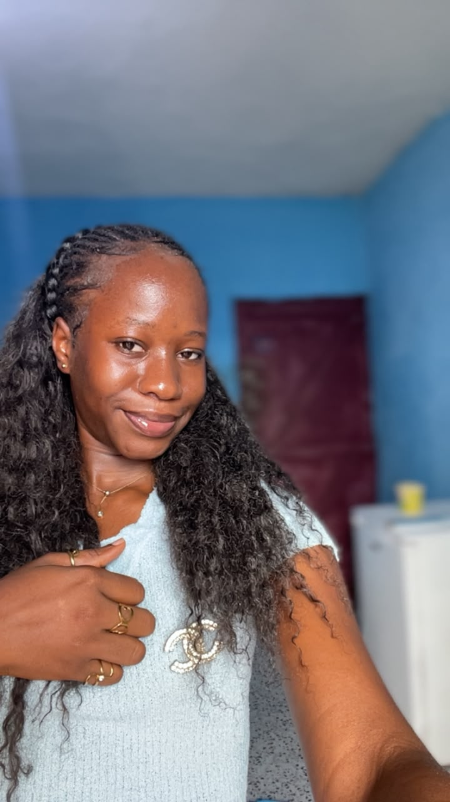

COMPUTER ENGINEERING • NETWORKING
I'm a second year Computer Engineering student, particularly interested in networking, based at the University of Buea - College of Technology.
Aspiring Cybersecurity Engineer and VoIP Engineer.
View My Projects Contact Me
ABOUT ME
I’m a second-year Computer Engineering student at the University of Buea with a growing interest in Networking and IT infrastructure.
I’m developing practical skills in computer networks, network devices, Cisco Packet Tracer, VoIP, FreePBX, and IP telephony. During my internship, I worked on setting up a FreePBX-based VoIP system and configuring Grandstream IP phones.
I’m passionate about learning, solving technical problems, and building practical solutions that improve communication and connectivity. My goal is to continue developing my networking skills and grow into a skilled network professional.
MY SKILLS
IP addressing, subnetting, routing, switching, VLANs and basic network troubleshooting.
FreePBX, PJSIP, Grandstream IP phones and basic IP telephony configuration.
Building and testing network topologies with routers, switches, PCs and other devices.
Learning Linux commands, system administration and network services.
Developing programming fundamentals and practical problem-solving skills.
Building foundational knowledge of network security and secure communication.
Studying Huawei VRP commands, networking concepts and datacom technologies.
Learning HTML, CSS and JavaScript to build useful web applications.
MY PROJECTS
01
A practical VoIP project involving the installation and configuration of a FreePBX server and Grandstream IP phones for internal office communication.
02
A student-focused web application concept designed to help students organize their studies with a study planner, exam countdown, GPA calculator and progress tracker.
03
Practical networking exercises involving routers, switches, PCs and printers, including IP addressing, subnetting, routing and basic LAN configuration.
EXPERIENCE
Yoli Technologies
2026
During my internship, I gained practical experience in networking and VoIP technologies. I worked with network devices, IP addressing, LAN configuration and troubleshooting.
I also worked with FreePBX, PJSIP and Grandstream IP phones while learning how IP telephony systems are configured and connected within a network.
EDUCATION
2025 - PRESENT
University of Buea - College of Technology
Currently developing knowledge and practical skills in computer engineering, with a particular focus on networking, systems and technology.
2025
GBHS Manengwassa
Completed secondary education with the GCE Advanced Level.
2023
GBHS Manengwassa
Completed secondary education with the GCE Ordinary Level.
CONTACT ME
I'm always interested in connecting with people in technology, networking, VoIP and cybersecurity.